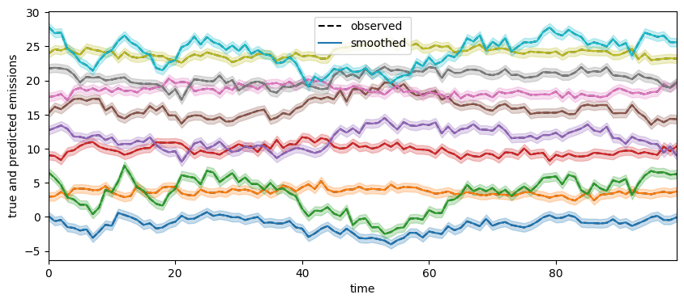
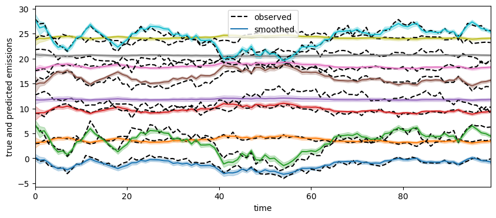
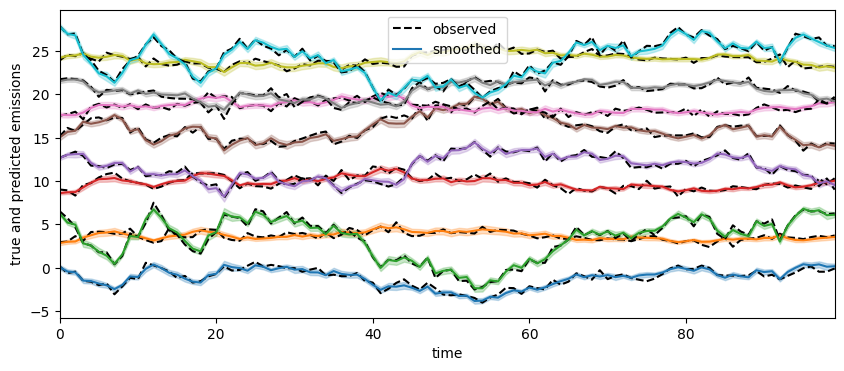

Bayesian parameter estimation for an LG-SSM using HMC¶
We show how to use the blackjax libray to compute the parameter posterior \(p(\theta|y(1:T))\) for an LGSSM model. We use the Kalman filter to compute the marginal likelihood, \(p(y(1:T) | \theta) = \int_{z(1:T)} p(z(1:T), y(1:T)|\theta)\).
Setup¶
try:
import dynamax
except ModuleNotFoundError:
print('installing dynamax')
%pip install -qq git+https://github.com/probml/dynamax.git
import dynamax
try:
import blackjax
except ModuleNotFoundError:
print('installing blackjax')
%pip install -qq blackjax
import blackjax
from jax import random as jr
from jax import numpy as jnp
from jax import jit, vmap
from itertools import count
from dynamax.linear_gaussian_ssm import LinearGaussianSSM
from dynamax.parameters import log_det_jac_constrain
import matplotlib.pyplot as plt
import matplotlib
matplotlib.rcParams['figure.figsize'] = [16, 9]
WARNING:jax._src.lib.xla_bridge:No GPU/TPU found, falling back to CPU. (Set TF_CPP_MIN_LOG_LEVEL=0 and rerun for more info.)
Generate synthetic training data¶
# Simulate synthetic data from true model
state_dim = 2
emission_dim = 10
num_timesteps = 100
keys = map(jr.PRNGKey, count())
true_model = LinearGaussianSSM(state_dim, emission_dim)
true_params, _ = true_model.initialize(next(keys))
true_states, emissions = true_model.sample(true_params, next(keys), num_timesteps)
def plot_results(emissions, smoothed_emissions, smoothed_emissions_std):
# all arrays are (T, E) dimensional, T=ntime, E=emission_dim
spc = 3
plt.figure(figsize=(10, 4))
for i in range(emission_dim):
plt.plot(emissions[:, i] + spc * i, "--k", label="observed" if i == 0 else None)
ln = plt.plot(smoothed_emissions[:, i] + spc * i,
label="smoothed" if i == 0 else None)[0]
plt.fill_between(
jnp.arange(num_timesteps),
spc * i + smoothed_emissions[:, i] - 2 * jnp.sqrt(smoothed_emissions_std[:, i]),
spc * i + smoothed_emissions[:, i] + 2 * jnp.sqrt(smoothed_emissions_std[:, i]),
color=ln.get_color(),
alpha=0.25,
)
plt.xlabel("time")
plt.xlim(0, num_timesteps - 1)
plt.ylabel("true and predicted emissions")
plt.legend()
plot_results(emissions, emissions, 0.1*jnp.ones_like(emissions)) # fake posterior variance

Baseline method: use EM to compute MLE¶
# Initilize parameters by fitting EM algorithm
num_iters = 100
test_model = LinearGaussianSSM(state_dim, emission_dim)
initial_params, param_props = test_model.initialize(next(keys))
fitted_params, marginal_lls = test_model.fit_em(initial_params, param_props, emissions, num_iters=num_iters)
# Extract fitted params
fitted_C = fitted_params.emissions.weights
fitted_d = fitted_params.emissions.bias
fitted_R = fitted_params.emissions.cov
# Compute predicted emissions
posterior = test_model.smoother(fitted_params, emissions)
smoothed_emissions_mean = posterior.smoothed_means @ fitted_C.T + fitted_d
smoothed_emissions_cov = fitted_C @ posterior.smoothed_covariances @ fitted_C.T + fitted_R
smoothed_emissions_std = jnp.sqrt(
jnp.array([smoothed_emissions_cov[:, i, i] for i in range(emission_dim)])).T # (T,E)
100.00% [100/100 00:01<00:00]
print([emissions.shape, smoothed_emissions_mean.shape, smoothed_emissions_std.shape])
plot_results(emissions, smoothed_emissions_mean, smoothed_emissions_std)
[(100, 10), (100, 10), (100, 10)]
Implement HMC wrapper¶
from dynamax.parameters import to_unconstrained, from_unconstrained
from dynamax.utils.utils import pytree_stack, ensure_array_has_batch_dim
from functools import partial
from fastprogress.fastprogress import progress_bar
def fit_hmc(model,
initial_params,
props,
key,
num_samples,
emissions,
inputs=None,
warmup_steps=100,
num_integration_steps=30,
verbose=True):
"""Sample parameters of the model using HMC."""
# Make sure the emissions and inputs have batch dimensions
batch_emissions = ensure_array_has_batch_dim(emissions, model.emission_shape)
batch_inputs = ensure_array_has_batch_dim(inputs, model.inputs_shape)
initial_unc_params = to_unconstrained(initial_params, props)
# The log likelihood that the HMC samples from
def _logprob(unc_params):
params = from_unconstrained(unc_params, props)
batch_lls = vmap(partial(model.marginal_log_prob, params))(batch_emissions, batch_inputs)
lp = model.log_prior(params) + batch_lls.sum()
lp += log_det_jac_constrain(params, props)
return lp
# Initialize the HMC sampler using window_adaptation
warmup = blackjax.window_adaptation(blackjax.hmc,
_logprob,
num_steps=warmup_steps,
num_integration_steps=num_integration_steps,
progress_bar=verbose)
init_key, key = jr.split(key)
hmc_initial_state, hmc_kernel, _ = warmup.run(init_key, initial_unc_params)
@jit
def hmc_step(hmc_state, step_key):
next_hmc_state, _ = hmc_kernel(step_key, hmc_state)
params = from_unconstrained(hmc_state.position, props)
return next_hmc_state, params
# Start sampling
log_probs = []
samples = []
hmc_state = hmc_initial_state
pbar = progress_bar(range(num_samples)) if verbose else range(num_samples)
for _ in pbar:
step_key, key = jr.split(key)
hmc_state, params = hmc_step(hmc_state, step_key)
log_probs.append(-hmc_state.potential_energy)
samples.append(params)
# Combine the samples into a single pytree
return pytree_stack(samples), jnp.array(log_probs)
Call HMC¶
sample_size = 500
param_samples, lps = fit_hmc(test_model, initial_params, param_props, next(keys), sample_size, emissions, num_integration_steps=30)
Running window adaptation
100.00% [100/100 00:00<?]
100.00% [500/500 00:30<00:00]
plt.plot(lps)
plt.xlabel("iteration")
plt.xlabel("log probability")
Text(0.5, 0, 'log probability')
@jit
def smooth_emission(params):
C = params.emissions.weights
d = params.emissions.bias
posterior = test_model.smoother(params, emissions)
return posterior.smoothed_means @ C.T + d
smoothed_emissions = vmap(smooth_emission)(param_samples)
smoothed_emissions_mean = smoothed_emissions.mean(axis=0)
smoothed_emissions_std = jnp.std(smoothed_emissions, axis=0)
print([emissions.shape, smoothed_emissions.shape, smoothed_emissions_mean.shape, smoothed_emissions_std.shape])
[(100, 10), (500, 100, 10), (100, 10), (100, 10)]
plot_results(emissions, smoothed_emissions_mean, smoothed_emissions_std)

Use HMC to infer posterior over a subset of the parameters¶
We freeze the transition parameters and inital parameters, so that only covariance matrices are learned. This is useful for structural time series models (see e.g., sts-jax library, which builds on dynamax.).
# Freeze transition parameters and inital parameters, so that only covariance matrices are learned
test_model = LinearGaussianSSM(state_dim, emission_dim)
test_params, test_param_props = test_model.initialize(next(keys),
dynamics_weights=true_params.dynamics.weights,
dynamics_bias=true_params.dynamics.bias,
emission_weights=true_params.emissions.weights,
emission_bias=true_params.emissions.bias)
# Set transition parameters and inital parameters to true values and mark as frozen
test_param_props.dynamics.weights.trainable = False
test_param_props.dynamics.bias.trainable = False
test_param_props.emissions.weights.trainable = False
test_param_props.emissions.bias.trainable = False
sample_size = 500
param_samples, lps = fit_hmc(test_model, test_params, test_param_props, next(keys), sample_size, emissions, num_integration_steps=30)
plt.plot(lps)
plt.xlabel("iteration")
plt.xlabel("log probability")
Running window adaptation
100.00% [100/100 00:00<?]
100.00% [500/500 00:25<00:00]
Text(0.5, 0, 'log probability')
@jit
def smooth_emission(params):
C = params.emissions.weights
d = params.emissions.bias
posterior = test_model.smoother(params, emissions)
return posterior.smoothed_means @ C.T + d
smoothed_emissions = vmap(smooth_emission)(param_samples)
smoothed_emissions_mean = smoothed_emissions.mean(axis=0)
smoothed_emissions_std = jnp.std(smoothed_emissions, axis=0)
print([emissions.shape, smoothed_emissions.shape, smoothed_emissions_mean.shape, smoothed_emissions_std.shape])
[(100, 10), (500, 100, 10), (100, 10), (100, 10)]
plot_results(emissions, smoothed_emissions_mean, smoothed_emissions_std)
